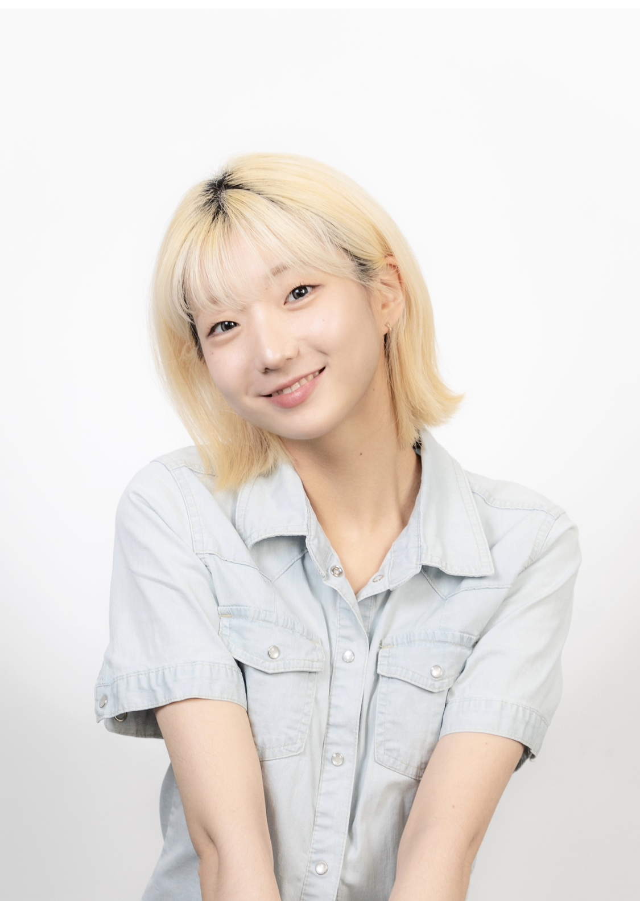

다양한
창작물을
만드는
성장형 크리에이터
오임경 입니다
다양한
창작물을
만드는
성장형 크리에이터
오임경 입니다
제가 관심 있는 분야는 영상 기획 및 편집입니다.
모든 요소가 하나부터 열까지 제 손을 거쳐 하나의 영상이 만들어지는 것이 좋습니다.
실제로 제 자신을 콘텐츠화하여 유튜브를 운영하면서, 실제 영상 제작에 관한 센스와
어떤 경로로 영상이 퍼지고, 알고리즘을 이해하는 등의 실무 능력을 길렀습니다.
맡은 일이 있다면, 다른 무엇보다도 일이 우선시되는 것 같습니다.
깔끔하고 명료한 답이 나올 때까지 끊임없이 노력하고 반복하여 책임감 있게
일을 수행하는 성격입니다.
팀 활동도 어렵지 않게 잘 진행하고, 최선의 결과를 위해 리더의 자리도 서슴없이 수행합니다.
지금 하고 있는 일이요, 센스를 발휘하여 이미지를 만든다거나, 영상의 자막을 쓰는 것 등이죠
익숙한 일도 좋지만, 가끔은 다양한 경험을 해보는 것도 좋아하는 것 같습니다.
반복되는 틀 속에서 계속해서 새로움을 찾고 싶어하거든요,
그래서 유행에 민감하게 반응하고, 또 그걸 ‘나’로서 콘텐츠화 시키는 것을 좋아해요,
언젠간 꼭 소속된 팀원들과 함께 하나의 작품을 만들어보고 싶어요.